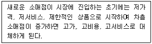
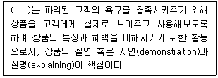
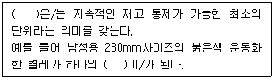
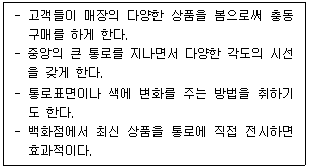

유통관리사-3급 (2015-05-10 기출문제)
1과목: 유통상식
1. 완구나 스포츠용품처럼 특정품목군만을 집중적으로 취급하는 유통형태로 해당품목에 대한 상세한 정보와 함께 다양한 제품을 살펴보고 구매할 수 있는 장점을 갖고 있는 소매업태는?
- 대형할인점
- 종합쇼핑몰
- 홈쇼핑
- 카테고리킬러
- 백화점
(정답률: 86%)

2. 다음에서 설명하는 소매업태의 진화과정으로 옳은 것은?

- 소매수명주기(Retail Life Cycle)
- 소매아코디언 이론(Retail Accordion)
- 변증법적 진화과정(Dialectic Process)
- 소매수레바퀴의 가설(Wheel of Retailing)
- 자연도태설(Natural Selection)
(정답률: 50%)
3. 판매원이 지녀야 할 에티켓에 대한 설명으로 가장 옳은 것은?
- 최신 유행하는 화려한 화장을 하여 눈에 띄게 한다.
- 손님의 기분을 좋게 할 수 있는 사장님 혹은 사모님의 호칭을 사용한다.
- 고객이 너무 어색해 하지 않도록 일정한 공간을 유지하면서 응대한다.
- 고객응대 시 가능한 큰 모션을 취한다.
- 처음 방문한 고객에게 친근감을 위해 최대한 가깝게 마주본다.
(정답률: 86%)
4. 소매업자들이 모여 공동으로 매입(joint buying)함으로써 생기는 장점으로 가장 옳지 않은 것은?
- 대량발주에 의한 매입원가 인하
- 계획적 발주, 배송에 의한 유통경비의 절감
- 전문매입담당자에 의한 엄밀한 상품선정
- 공동의 상품개발
- 경쟁 소매업체의 머천다이징 파악
(정답률: 54%)
5. 인적판매에 대한 설명으로 옳지 않은 것은?
- 인적판매는 고객과의 인격적·교육적 만남으로 이루어진다.
- 인적판매는 단순히 물건 그 자체만의 판매를 넘어선 추가 정보를 제공한다.
- 고객의 구매욕구를 자극시키기 위해 인간적인 서비스를 제공한다.
- 지속적이기 보다는 단순 거래적인 측면이 강하다.
- 언어적, 비언어적 수단을 통해 고객과 교류한다.
(정답률: 77%)
6. TV홈쇼핑에 대한 설명으로 가장 옳지 않은 것은?
- TV를 통해 소개된 상품을 통신 수단을 통해 주문한 후 배달받는 무점포 판매방식 중 하나이다.
- 홈쇼핑은 생산자와 소비자를 직접 연결하여 중간마진을 최대한 축소한다는 기본판매전략을 취한다.
- 크게 직접반응광고를 이용한 주문방식과 홈쇼핑채널을 이용한 주문방식으로 나누어진다.
- 유익한 상품 정보를 얻을 수 있으며 소비생활의 편의 수단으로 각광받아 시장위치를 확보하고 있다.
- 주문자의 가정까지 직접 배달해주는 고유특성상 부피가 큰 대형가전이나 생식품 등은 취급하지 않는다.
(정답률: 86%)
7. 접객용 용어의 올바른 사용법으로 옳지 않은 것은?
- “어서오십시오”- 처음 맞이할 때
- “네, 잘 알겠습니다”- 고객요구의 첫 응대 시
- “죄송합니다만”- 고객에게 요구나 부탁할 때
- “오랫동안 기다리셨습니다”- 상품을 찾아 왔을 때
- “감사합니다”- 고객과 눈길이 마주 쳤을 때
(정답률: 75%)
8. 성희롱 예방요령으로 옳지 않은 것은?
- 부하직원을 칭찬할 때 쓰다듬거나 하는 행위를 하지 않는다.
- 가급적 신체접촉을 안 한다.
- 당사자 간의 일이므로 관리자가 나설 필요는 없다.
- 일단 성희롱이 발생하면 즉시 조치를 취한다.
- 조치 이후에 가해자가 보복하지 않도록 주의해야 한다.
(정답률: 93%)
9. 매장에서 고객 대기 시 판매사원이 취해도 되는 자세로 옳은 것은?
- 손님용 거울을 장시간 보는 행위
- 기대는 행위
- 팔짱을 끼는 행위
- 고객 시선을 회피하지 않는 행위
- 다른 생각으로 고객에게 집중하지 못하는 행위
(정답률: 86%)
10. 고관여상품 대비 저관여상품의 소비자 구매특징으로 옳지 않은 것은?
- 구매빈도가 낮다.
- 구매단가가 낮다.
- 생필품을 주로 구매한다.
- 습관적 구매가 많은 편이다.
- 충동적 구매가 많은 편이다.
(정답률: 77%)
11. 기업이 특정 지역에서 자사제품을 취급할 수 있는 독점적 권한을 하나의 중간상에게 부여하는 유통방식은?
- 집약적 유통(intensive distribution)
- 전속적 유통(exclusive distribution)
- 제한적 유통(restrictive distribution)
- 선택적 유통(selective distribution)
- 직접적 유통(direct distribution)
(정답률: 70%)
12. 소매상의 추세에 대한 설명으로 가장 옳지 않은 것은?
- 소매업의 양극화 추세가 심화되고 있다.
- 고마진-저회전을 추구하는 전문점이 성장하고 있다.
- 파워 리테일러에 의한 시장지배력이 심화되고 있다.
- 규모의 경제를 추구하는 대형점포가 증가하고 있다.
- 편의성을 위해 판매사원에 대한 의존도가 증가하고 있다.
(정답률: 59%)
13. 소비재 유통경로의 흐름으로 가장 옳은 것은?
- 소매상 - 중간도매상 - 도매상 - 제조업자 - 소비자
- 제조업자 - 중간도매상 - 도매상 - 소매상 - 소비자
- 중간도매상 - 소매상 - 도매상 - 소비자 - 제조업자
- 제조업자 - 도매상 - 중간도매상 - 소매상 - 소비자
- 도매상 - 중간도매상 - 소매상 - 제조업자 - 소비자
(정답률: 91%)
14. 소매상의 유형과 의미를 짝지은 것으로 옳지 않은 것은?
- 백화점 - 다양성과 구색을 추구
- 편의점 - 깊은 구색과 저가격 추구
- 할인점 - 상시적 저가격
- 양판점 - 다품종 판매
- 아웃렛 - 재고처리용 할인
(정답률: 72%)
15. 가격파괴형 유통업태에 해당하지 않는 것은?
- 하이퍼마켓(hypermarket)
- 수퍼센터(super center)
- 회원제 도매클럽(membership wholesale club)
- 카테고리 킬러(category killer)
- 전문점(specialty store)
(정답률: 77%)
16. 소매상의 분류에 대한 설명으로 가장 옳지 않은 것은?
- 점포의 유무에 따라 점포 소매상과 무점포 소매상으로 분류된다.
- 소유 및 운영주체에 따라 크게 독립소매기관과 체인으로 분류된다.
- 상품의 다양성 및 구색에 따라 구분하면 백화점과 전문점은 동일한 유형에 해당된다.
- 마진과 회전율로 소매상을 구분하는 것은 사용전략에 의한 분류이다.
- 판매원들이 고객이 필요로 하는 모든 서비스를 제공하는 전문점이나 백화점은 완전서비스 소매상에 속한다.
(정답률: 53%)
17. 유통의 기본개념에 대한 설명으로 가장 옳지 않은 것은?
- 유통의 기본활동은 상품이나 서비스의 소유권을 이전하는 활동이다.
- 유통은 생산자와 소비자 간의 간격을 메워주고 여러 가지 효용을 창조하는 활동이다.
- 유통은 거래횟수를 늘리고 거래관계를 다변화하여 수요자에게 다양한 상품 및 서비스를 제공하는 활동이다.
- 유통경로는 상품 및 서비스를 생산자로부터 소비자에게 이전시키는 가치사슬 과정에 참여하는 모든 개인 및 기관을 말한다.
- 유통기관들은 소비자와 생산자 양쪽의 정보를 통합 전달하여 정보탐색비용을 줄이는 역할을 한다.
(정답률: 50%)
18. 유통업의 환경변화 중 사회, 경제적 요인에 해당하지 않는 것은?
- 교육수준의 향상
- 맞벌이 부부의 증가
- 평균 수명의 증가
- 소득수준의 증가
- 소비구조의 변화
(정답률: 57%)
19. 양판점에 대한 내용으로 옳지 않은 것은?
- 다점포화 전략
- 셀프서비스 지향
- 저마진/고회전 전략
- 재고위험을 제조업체가 부담
- 비용절감전략 추구
(정답률: 48%)
20. 소비자가 한 박스의 공책이 아닌 낱개의 공책을 구매할 수 있도록 하는 유통경로의 역할은?
- 탐색과정의 촉진
- 교환과정의 효율성 제고
- 반복화
- 분류기능 중 분배
- 거래의 일상화
(정답률: 74%)
2과목: 판매 및 고객관리
21. POP 작성 요령과 관련한 유의사항으로 가장 옳지 않은 것은?
- POP는 최대한 많은 원색을 사용하여 눈에 띄게 만든다.
- 짧고 명료하게 표현되어야 한다.
- 레이아웃은 적당히 여백을 남긴다.
- 다른 제품진열에 방해가 되지 않는 크기로 작성한다.
- 가격과 상표명을 명시하는 편이 좋다.
(정답률: 65%)
22. 매장 내에서 소비자의 입장에 따른 제품분류의 체계와 거리가 먼 것은?
- 제품을 소비자가 어떻게 이용할지에 따라 그룹화하는 방법
- 제품을 사고 싶어 하는 정도에 따라 분류하는 방법
- 표적시장(target market)에서 정의하는 대로 제품을 분류하는 방법
- 광고 방식에 따라 제품을 그룹화하는 방법
- 보관방법에 따라 제품을 분류하는 방법
(정답률: 40%)
23. 포장과 레이블이 주는 기능적 및 의사소통적 혜택에 대해 기술한 것이다. 이 중 기능적 혜택에 해당하지 않는 것은?
- 소비자 보호를 위해 훼손 방지 용기를 개발하여 사용한다.
- 유통기한 표시를 통해 소비자를 보호한다.
- 콜라의 음료팩을 냉장고 선반에 알맞게 고안하여 사용한다.
- 영양과 칼로리에 대한 규격화된 정보를 제공한다.
- 체중을 걱정하는 소비자를 위해 개별포장의 과자를 제공한다.
(정답률: 38%)
24. 한때는 유아용 제품으로 간주되었던 아스피린이, 현재는 심장질환이나 뇌졸중 위험을 줄여주는 저강도 성인용 아스피린으로 개발되어 판매되고 있다. 이러한 사례처럼 소비자들이 기존 제품에 대해 가지고 있던 이미지를 새로운 타겟층에게 가장 가깝게 접근하기 위해 새롭게 조정하는 활동을 뜻하는 용어는?
- 시장확장
- 기능개선
- 제품리포지셔닝
- 저가치전환
- 고가치전환
(정답률: 72%)
25. 단골고객관리(loyalty management)에 대한 설명으로 가장 옳지 않은 것은?
- 일반적으로 신규고객을 확보하는 비용이 단골고객을 유지하는 것보다 훨씬 높다.
- 모든 단골고객은 VIP 고객으로 볼 수 있다.
- 단골고객을 적극적으로 관리해야 한다.
- 단골고객을 파악하고 세분화해야 한다.
- 단골고객 유지여부를 지속적으로 점검해야 한다.
(정답률: 60%)
26. 선매품에 대한 설명으로 가장 옳은 것은?
- 구매하기 전 품질, 가격, 스타일 등에 대한 정보를 탐색하며 대안들에 대한 비교·평가를 통해 구매를 결정하는 제품이다.
- 정보탐색 없이 거의 습관적으로 같은 브랜드를 사거나, 쓰던 브랜드가 없으면 매장에 있는 비슷한 다른 브랜드를 구매하는 제품이다.
- 소비자는 제품에 대한 완전한 지식을 갖고 있어 최소한의 노력으로 적합한 제품을 구매하는 행동을 보인다.
- 가격이 저렴하며 빈번하게 구매할 수 있는 스낵, 담배, 잡화 등이 대표적이다.
- 폭넓은 유통망 체계를 구축하고 있으며 특정 브랜드의 제품이 갖는 독특성 때문에 마진이 높다.
(정답률: 66%)
27. 점포의 구성과 설계에 대한 내용으로 옳지 않은 것은?
- 점포 구성은 고객이 많은 노력을 하지 않아도 제품을 쉽게 찾을 수 있도록 꾸며져야 한다.
- 매장 앞을 지나는 고객이 내부의 분위기를 느낄 수 있도록 설계되어야 한다.
- 개성과 특성을 살리면서도 제품 판매 및 동선이 효율적이도록 설계되어야 한다.
- 목표고객이 점포 안으로 들어올 수 있도록 이미지표출에 중점을 두어야 한다.
- 백화점과 할인점 같은 대형점포는 화려하고 고급스럽게 꾸며 소비자가 쇼핑에 대한 가치를 느낄 수 있도록 해야 한다.
(정답률: 60%)
28. 서비스 상품의 특징으로 옳지 않은 것은?
- 서비스 상품의 경우 정보탐색비용이 상대적으로 높다.
- 서비스 상품을 구매할 때 일반제품보다 지각 위험이 높다.
- 서비스 상품의 대안평가 시 가격과 서비스시설 같은 요소에 의존하게 된다.
- 서비스 상품은 경험적 특성과 신념적 특성이 일반 제품보다 강하다.
- 서비스 상품의 무형성을 보완하기 위해서는 인적정보원에 의존하기보다 대중매체를 통한 가시적광고에 집중해야 한다.
(정답률: 60%)
29. 제품 혹은 서비스의 성능이나 기능보다 사회적인 수용, 개인존중, 자아실현 측면의 불만을 의미하는 것은?
- 효용 불만
- 심리적 불만
- 균형 불만
- 상황적 불만
- 고객불만처리 MTP (Man, Time, Place)
(정답률: 55%)
30. 고객응대의 기본자세에 대한 설명으로 옳지 않은 것은?
- 예절바르고 상냥한 느낌을 주도록 적절한 어휘 및 제스처를 선택한다.
- 올바른 자세로 응대한다. 실제 바르지 못한 자세는 정신상태도 올바르지 못한 것 같아 신뢰감이 생기지 않기 때문이다.
- 살아 있는 얼굴표정은 상대방의 진지성 및 응대성을 읽을 수 있게 하는바, 적절한 표정으로 표현해야 한다.
- 제스처에 신경을 써야 한다. 왜냐하면 제스처는 대화를 유효적절하게 이끌어 주며, 보다 만족스러운 인간관계를 만들어 주기 때문이다.
- 반가운 인사는 필요하지만 소비자가 부담을 느끼지 않도록 고개를 숙여 인사할 필요는 없다.
(정답률: 85%)
31. 제품개발과 관련 신제품 개발 과정의 6단계 순서가 가장 옳게 나열된 것은?
- 개발 → 테스팅 → 상업화 → 아이디어 도출 → 아이디어 선별 → 제품 분석
- 테스팅 → 상업화 → 아이디어 도출 → 아이디어 선별 → 제품 분석 → 개발
- 상업화 → 아이디어 도출 → 아이디어 선별 → 제품 분석 → 개발 → 테스팅
- 아이디어 도출 → 아이디어 선별 → 제품 분석 → 개발 → 테스팅 → 상업화
- 제품 분석 → 개발 → 테스팅 → 상업화 → 아이디어 도출 → 아이디어 선별
(정답률: 79%)
32. 매체별 상담기법 중 방문상담의 장점으로 옳지 않은 것은?
- 상담시간 절약효과가 있다.
- 상담사와 즉시 상담에 임할 수 있다.
- 고객이 상담사를 직접 대면하면서 많은 문제를 상담하기에 용이하다.
- 방문 상담은 상담사에게 다른 계획된 업무를 처리하는데 지장을 주지는 않는다.
- 상담사가 즉시 문제해결에 필요한 자료, 사례, 법규를 신속하게 찾아서 해결할 수 있고, 고객의 동의나 협조를 구할 수 있다.
(정답률: 65%)
33. 점포시설 구성과 관련된 점내시설 중의 하나인 통로 설계 시 고려 사항으로 옳지 않은 것은?
- 고객의 동선(動線)은 가능한 한 입구에서 점내 깊숙한 곳까지 길게 하는 것이 좋다.
- 종업원의 동선은 매장의 모든 고객을 응대할 수 있도록 가능한 길게 하는 것이 좋다.
- 고객이 걸어 다니기에 편한 폭과 바닥 소재, 상품진열과의 관련성 및 조명과의 관련성을 고려해야 한다.
- 점포의 규모가 클 경우에는 고객이 쉴 수 있는 의자를 설치할 수 있는 공간도 필요하다.
- 점포 내의 통로는 점두 부분과 점내 전체를 연결하기 위한 중요한 시설로서 고객으로 하여금 점포 내를 두루 다닐 수 있도록 고려하여 설계하여야 한다.
(정답률: 68%)
34. 고객 유지를 위한 사후관리에 대한 설명으로 가장 옳지 않은 것은?
- 판매 종결로 모든 것이 끝나기 때문에 가치제안에서 약속한 내용들이 충실하게 수행되었는지는 확인할 필요가 없다.
- 사후관리 차원에서 정확한 대금 결제 수행 여부를 확인해야 한다.
- 사후관리 차원에서 정확한 배송 수행 여부를 확인해야 한다.
- 사후관리 차원에서 필요한 경우, 장비의 적절한 설치를 위해 원활한 지원을 하여야 한다.
- 사후관리 차원에서 공급하는 제품의 정상적 기능수행을 확인해야 한다.
(정답률: 79%)
35. 괄호 안에 들어갈 적절한 용어는?

- 마케팅 믹스
- 판매제시
- 구매시점 광고
- 판매마무리
- 고객관계관리
(정답률: 56%)
36. POS(point of sales)시스템이 대두된 배경으로 가장 옳지 않은 것은?
- 소비자 욕구가 획일화, 단순화되어 상품의 라이프사이클이 짧아짐에 따라 소비자 욕구를 단품수준에서 신속하게 포착하여 즉각 대응할 수 있는 시스템이 필요하게 되었다.
- 매상등록시간을 단축시키고 입력오류를 방지할 시스템이 필요하게 되었다.
- 급변하는 소매환경 속에서 상세한 판매정보를 신속, 정확하게 수집할 수 있는 시스템이 필요하게 되었다.
- 변화무쌍한 소비자의 욕구를 포착하여 판매관리, 재고관리 등에 반영할 수 있는 시스템이 필요하게 되었다.
- 판매 상품을 파악하여 상품구색에 반영할 수 있는 시스템이 필요하게 되었다.
(정답률: 62%)
37. 판매담당자가 하는 친절한 말 한마디가 고객의 구매여부를 결정지을 수 있는 중요한 역할을 담당하기도 한다. 다음 중 고객에게 호감을 줄 수 있는 바람직한 대고객응대화법으로 가장 옳지 않은 것은?
- 공손한 말씨를 사용한다.
- 고객의 이익이나 입장을 중심으로 이야기 한다.
- 고객이 모르는 전문용어를 사용하여 전문가다운 모습을 보여준다.
- 고객응대에 예의를 갖춘다.
- 명확하게 말한다.
(정답률: 84%)
38. ( ) 안에 들어갈 용어로 옳은 것은?

- 카테고리
- 계열
- 단품
- 용품
- 수준
(정답률: 66%)
39. 포장의 원칙에 대한 설명으로 옳지 않은 것은?
- 포장의 크기가 적당하고 깔끔하게 해야 한다.
- 포장을 신속하게 함으로써 고객이 오래 기다리지 않도록 한다.
- 선물인 경우, 리본을 달지 말지에 대해 구매자의 의사를 타진한다.
- 고가의 선물용 상품인 경우, 받는 사람에게 보여주기 위하여 가격표를 떼지 않는 것이 원칙이다.
- 상품의 더럽혀진 부분이나 파손된 부분이 없는지를 확인한 후 포장한다.
(정답률: 83%)
40. 상품진열 시 상품의 얼굴(face)을 결정하고자 할 때 고려해야 할 사항으로 옳지 않은 것은?
- 고객의 상품 선택 포인트가 되는 면은 어디인가를 고려해야 한다.
- 넓게 보이는 면은 어디인가를 고려해야 한다.
- 상품의 내용물이 보이는 면은 어디인가를 고려해야 한다.
- 배색과는 상관없이 진한 색이 돋보일 수 있는 면은 어디인가를 고려해야 한다.
- 진열하기 쉬운 면은 어디인가를 고려해야 한다.
(정답률: 82%)
41. 마케팅 믹스를 구성하는 변수로 옳지 않은 것은?
- 제품(Product)
- 가격(Price)
- 촉진(Promotion)
- 포지셔닝(Positioning)
- 유통(Place)
(정답률: 66%)
42. 아래 설명에 가장 적합한 레이아웃 유형은?

- 자유형(free-form) 배치
- 경주로형(racetrack) 배치
- 혼합형 배치
- 격자형(grid) 배치
- 바둑판 배치
(정답률: 49%)
43. 이탈고객에 대한 설명으로 가장 옳지 않은 것은?
- 고객이탈율은 1년 동안 떠나는 고객의 수를 신규고객의 수로 나눈 값이다.
- 이탈고객이 제공하는 정보를 활용하여 이탈고객이 발생하지 않도록 노력해야 한다.
- 완전히 이탈한 고객만이 아닌 어느 정도 이용률이 떨어진 고객도 관리해야 한다.
- 고객이탈율 제로문화를 형성하기 위해 노력해야 한다.
- 휴면고객의 정보를 활용하여 고객으로 환원시킨다.
(정답률: 64%)
44. 고객의 욕구에 대한 내용으로 옳지 않은 것은?
- 소매고객의 욕구는 기능적 욕구와 심리적 욕구 등으로 구분할 수 있다.
- 기능적 욕구는 상품의 성능과 직접적으로 관련된다.
- 심리적 욕구는 상품 구매 및 소유로부터 얻게 되는 개인적인 만족과 관련된다.
- 상품의 쇼핑과 구매를 통해 충족될 수 있는 심리적욕구에는 자극, 사회적 경험, 새로운 유행의 습득, 자기보상, 지위와 권력 등이 있다.
- 기능적 욕구는 흔히 감정적이라고 인식되며 심리적욕구는 합리적이라고 인식된다.
(정답률: 74%)
45. 판매저항의 유형으로 보기 어려운 것은?
- 고객의 입장에서 질문을 통한 저항
- 말없이 침묵하는 형태를 지닌 저항
- 고객이 자신의 주장을 고집하려고 여러 가지 이유를 대는 저항
- 보증기간 경과 후에도 무상 A/S를 신청하는 저항
- 변명의 형태를 지닌 저항
(정답률: 49%)